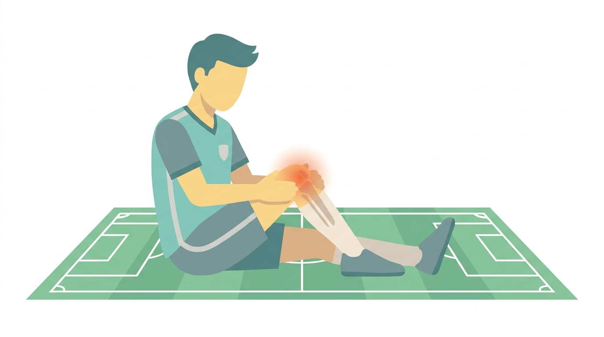
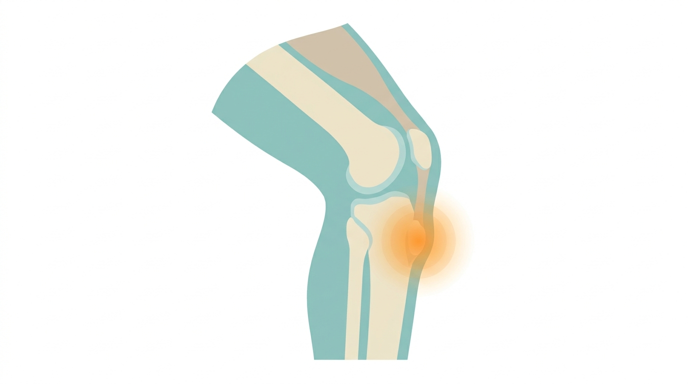
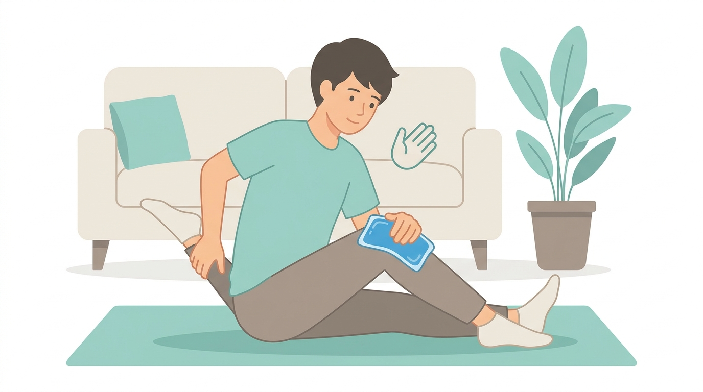

핵심 요약
축구나 농구, 달리기를 즐기는 초·중등학생 자녀가 "무릎 아래가 튀어나오고 아프다"고 호소한다면 오스굿슐라터병(Osgood-Schlatter disease)을 의심해볼 수 있습니다. 이름이 낯설게 느껴지실 수 있지만, 성장기 무릎 통증의 대표적인 원인 중 하나입니다.

통증이 생기는 위치가 진단의 핵심입니다. 오스굿병은 무릎뼈(슬개골) 자체가 아니라, 그 아래로 손가락 하나 정도 내려간 지점, 즉 정강이뼈 위쪽으로 튀어나온 부분(경골 조면, tibial tubercle)에서 통증이 나타납니다. 이 부위는 허벅지 앞쪽 근육의 힘줄(슬개건)이 정강이뼈에 붙는 자리인데, 급성장기에는 뼈가 근육과 힘줄보다 빠르게 자라면서 아직 물렁한 성장판(골단)을 반복적으로 잡아당기게 됩니다. 그 결과 미세한 손상과 염증이 쌓이면서 통증과 함께 뼈가 도드라져 보이는 변화가 생깁니다.
부모님들이 가장 헷갈려 하시는 부분이 "그냥 성장통 아닌가?" 하는 점입니다. 두 가지는 양상이 다릅니다.
간단한 자가 체크 포인트는 다음과 같습니다.
위 항목에 해당한다면 오스굿병 가능성을 염두에 두고 병원 진료를 고려해보시는 것이 좋습니다.
가장 많이 오해하시는 부분입니다. 오스굿병 진단을 받으면 "운동을 아예 쉬어야 한다"고 생각하기 쉽지만, 실제 원칙은 통증에 맞춘 활동 조절(pain-guided activity)입니다.
돌출된 뼈 부위는 성장판이 닫힌 이후에도 흔적으로 남을 수 있지만, 이는 미용적인 변화일 뿐 무릎 기능 자체에는 대부분 문제를 남기지 않습니다.

오스굿병은 대부분 시간이 지나면서, 특히 성장판이 닫히는 시기(대개 청소년기 후반)가 되면 증상이 자연히 사라지는 경과를 보입니다. 다만 개인차가 커서 수개월에서 길게는 1~2년 이상 간헐적으로 통증이 지속되는 경우도 있습니다. 급성 악화기에는 활동 조절과 관리를 병행하며 경과를 지켜보는 것이 일반적입니다.
대부분의 경우 자가관리로 호전되지만, 아래에 해당한다면 오스굿병이 아닌 다른 질환(감염, 종양, 골절, 인대·반월판 손상 등)일 가능성이 있어 반드시 진료가 필요합니다.
이런 신호가 있다면 정형외과에서 진찰과 함께 X-ray 등 영상검사를 통해 정확한 원인을 확인하시는 것이 안전합니다.
Q1. 오스굿병은 양쪽 무릎에 다 생길 수 있나요?
네, 한쪽에만 생기기도 하지만 양쪽 무릎에 함께 나타나는 경우도 흔합니다.
Q2. 튀어나온 뼈는 없어지지 않나요?
성장판이 닫힌 후에도 돌출 부위가 흔적으로 남을 수 있지만, 통증은 대개 사라지고 무릎 기능에는 큰 영향을 주지 않는 경우가 대부분입니다.
Q3. 운동을 좋아하는 아이인데 스포츠를 그만둬야 하나요?
완전히 그만둘 필요는 없습니다. 통증 정도에 맞춰 강도를 조절하면서 활동을 이어갈 수 있으며, 심한 통증이 반복된다면 전문의와 상담해 적절한 운동량을 정하는 것이 좋습니다.
성장기 무릎 통증은 대부분 오스굿병처럼 시간이 지나면 자연히 좋아지는 경우가 많지만, 통증 양상과 경고 신호를 정확히 구별하는 것이 중요합니다. 자녀의 증상이 위에 소개한 경고 신호에 해당하거나, 통증으로 일상생활·운동에 지장이 있다면 정형외과 전문의의 진찰을 받아 정확한 진단과 관리 계획을 세우시길 권합니다.
함께 보면 좋은 글: 무릎 연골연화증 자가관리 · 슬개대퇴 통증증후군 관리 · 반월상연골 손상 초기 대처
※ 본 글은 교육·정보 제공용이며 의학적 진단·치료를 대체하지 않습니다. 증상이 지속·악화되면 진료를 받으세요. | 홈 · 가이드 · 소개 · 개인정보처리방침 · 이용약관